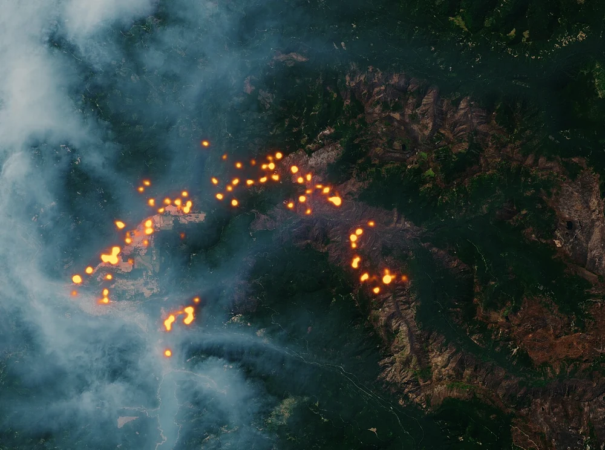
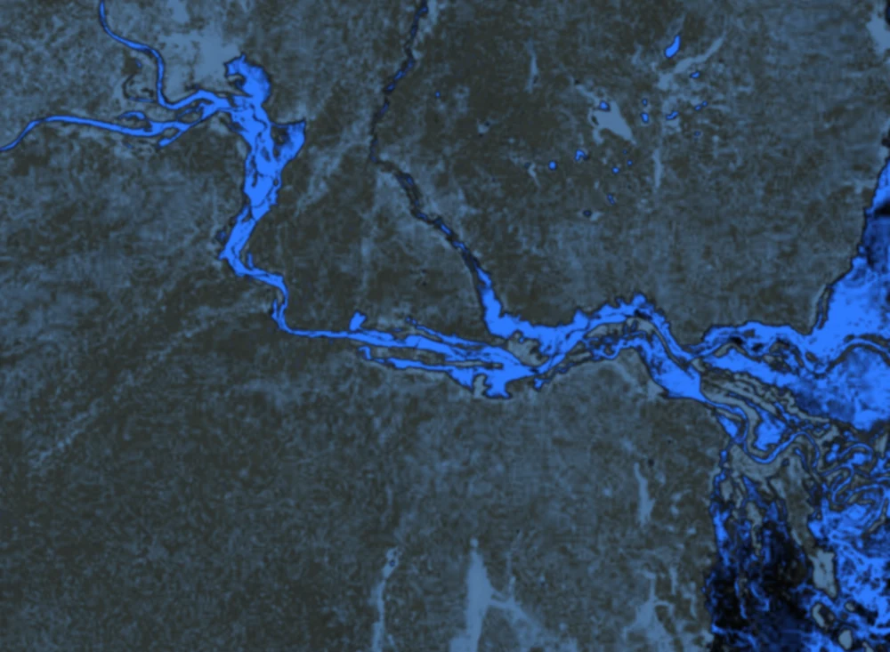
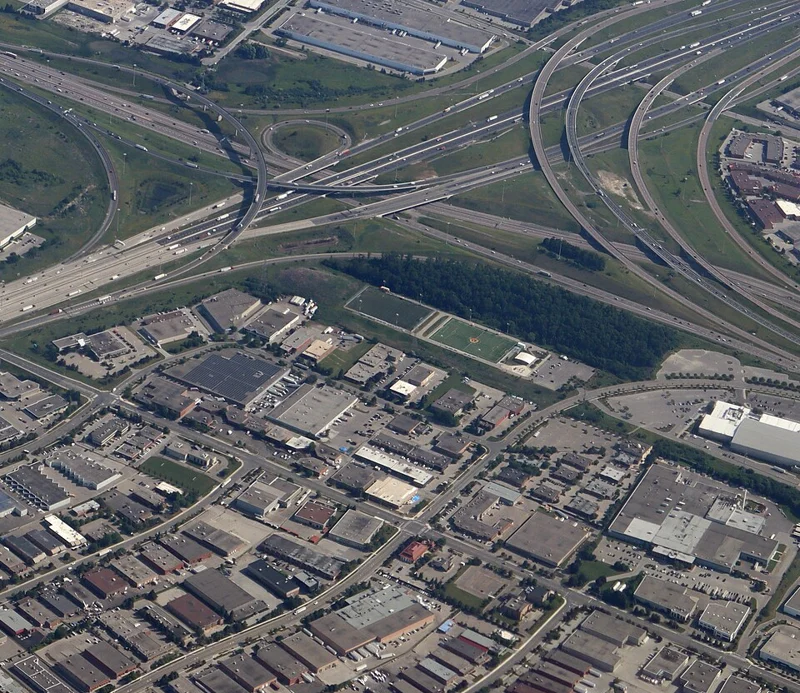
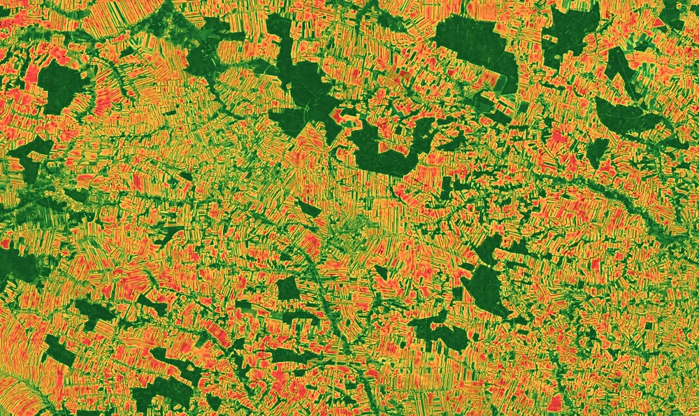
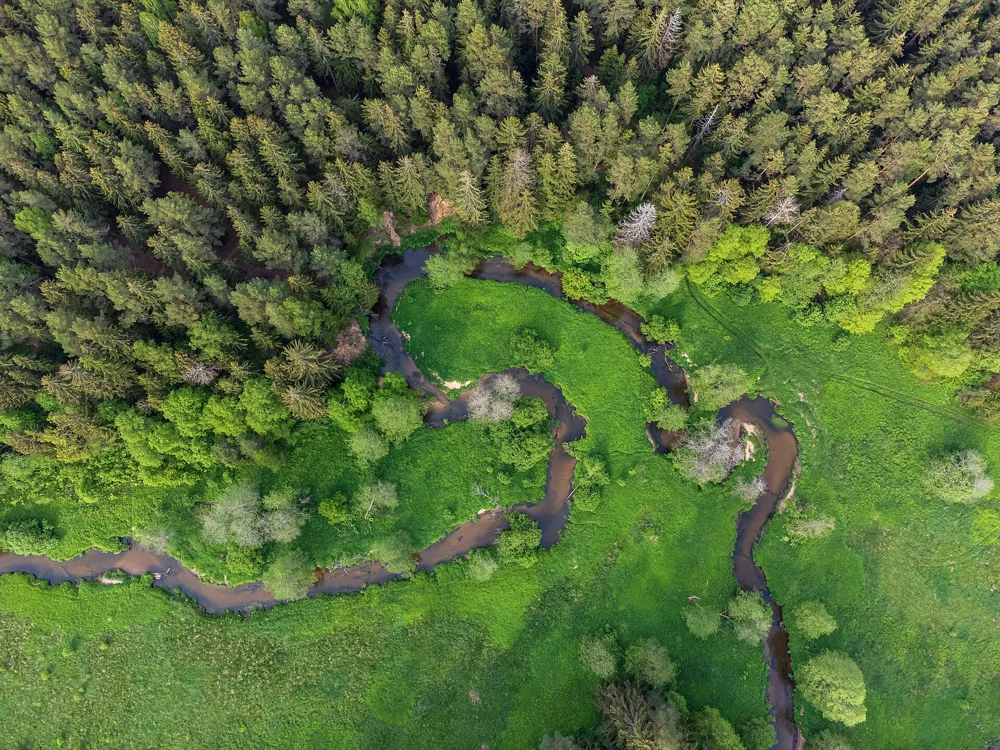

Пожары
Выявление и прогноз

- Высокий
- Повышенный
- Умеренный
- Низкий
327Активных очагов
Спутниковые данные
для более устойчивого завтра
AFFIRION превращает глобальные наблюдения в практические инсайты, помогая принимать более безопасные, устойчивые и обоснованные решения.
Платформа
Спутниковые данные, метеоинформация и аналитика в единой платформе.
Выявление и прогноз

Мониторинг в реальном времени

Мониторинг и изменения

Состояние посевов и стресс-факторы

Леса, экосистемы и изменения

20182024Продукты
Более безопасная, устойчивая планета
Партнёрствуйте с AFFIRION, чтобы превратить спутниковые данные в конкретные решения для вашего региона, отрасли и задач.